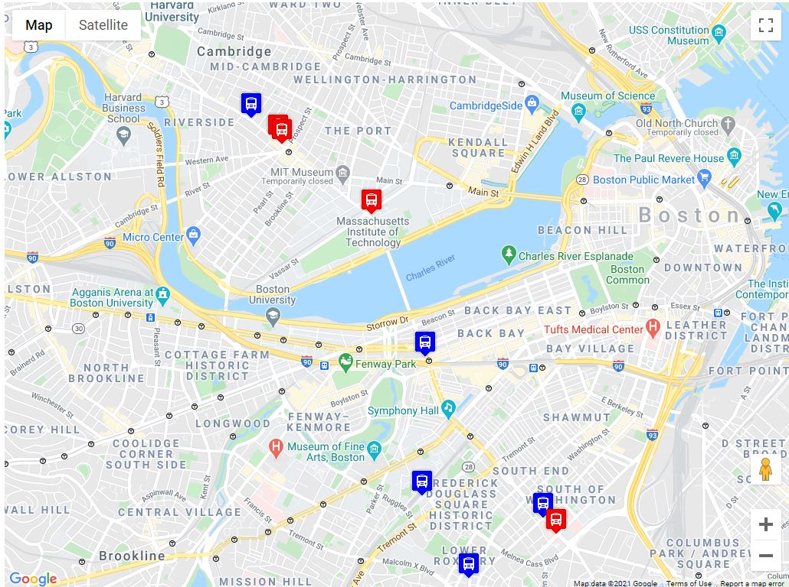
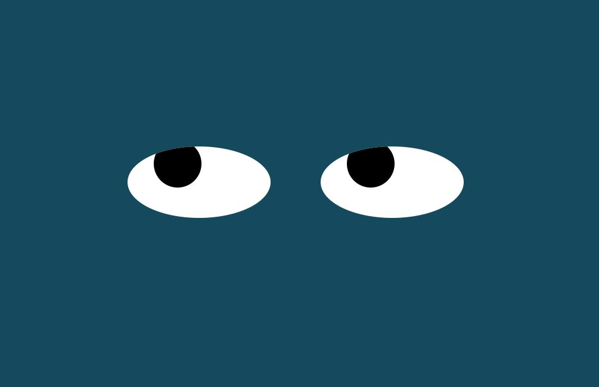

GitHub portfolio of projects

In this project an image of pacman is created and moves back and forth within the window of the browser. To make him move once the window is open, simply click within the window. Once he is moving you can click a few more times to add a little bit of speed
<---

this project is a real-time bus tracker near MIT. due to the restrictions placed by the MBTA, this can only updated every 15 seconds
<---

In this project a pair of eyes will follow the movements of your cursor on the screen
<---